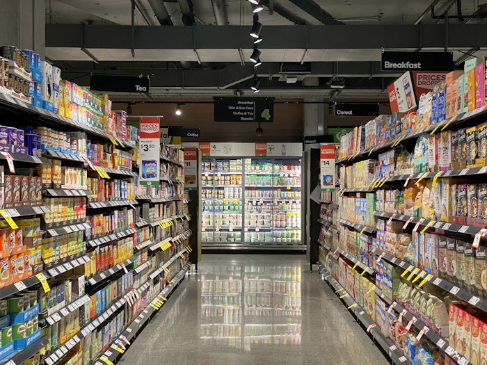
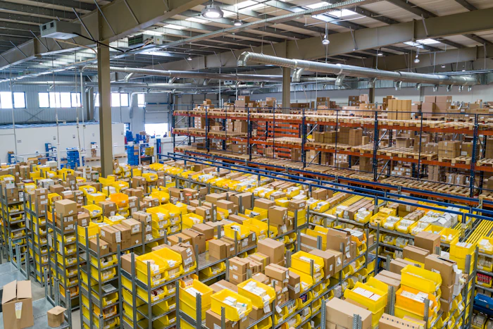

Prejuízo financeiro
Produtos perecíveis descartados por uma falha térmica que ninguém viu.
O Tempic monitora câmaras frias e veículos refrigerados, avisa quando a temperatura sai da faixa segura e permite ligar equipamentos e a iluminação à distância.
Conectando à API Open-Meteo…
Alimentos e medicamentos precisam ficar dentro de faixas específicas de temperatura. Fora delas, perdem qualidade e podem se tornar impróprios para o consumo — prejuízo para quem vende e risco para quem consome.
Soluções que apenas registram a temperatura deixam para o responsável a tarefa de perceber o problema e agir a tempo. Com verificações manuais, a falha só é notada depois que ocorreu.
Pergunta de pesquisaComo um sistema IoT pode monitorar a temperatura de câmaras frias e veículos refrigerados em tempo real e, além disso, permitir que o responsável intervenha remotamente nos equipamentos?
Produtos perecíveis descartados por uma falha térmica que ninguém viu.
Variações alteram características físicas e químicas dos produtos.
Sem acionamento remoto, corrigir o problema exige estar no local.
Cada integrante da equipe ficou responsável por uma camada do sistema.
Medem a temperatura da câmara fria, geladeira, freezer ou baú do veículo.
Lê os sensores e aciona os módulos relé dos equipamentos e da iluminação, via Wi-Fi.
MQTT · HTTPProcessa as leituras, aplica as regras de negócio e dispara os alertas.
Guarda o histórico de temperaturas, os eventos e a autenticação dos usuários.
O gestor acompanha leituras, recebe alertas e liga ou desliga equipamentos.
Levantados nas disciplinas de Levantamento de Requisitos e Projetos — e todos disponíveis na demonstração web.
Coleta da temperatura por sensores IoT, com intervalo de até 5 segundos até a tela.
Liga e desliga geladeiras, freezers e câmaras — manualmente ou em modo automático.
Controle manual e programado por horário, inclusive em janelas que passam da meia-noite.
Notificação quando a temperatura ultrapassa o limite crítico definido para o equipamento.
Consultas por 24 horas, 7 ou 30 dias, gráfico com a faixa segura e exportação em CSV.
A refrigeração liga perto do limite máximo e desliga ao atingir o alvo, sem intervenção.

Câmaras frias, expositores e a iluminação do estacionamento.

Estoques refrigerados com histórico para auditoria.
Acompanhamento da carga durante todo o trajeto.
Medicamentos e insumos sensíveis à temperatura.
A maioria das soluções analisadas foca na leitura passiva dos dados. O diferencial do Tempic é unir monitoramento, alertas e automação de equipamentos e iluminação em uma única plataforma.
| Solução | Monitoramento de temperatura | Alertas automáticos | Controle de equipamentos | Controle de iluminação |
|---|---|---|---|---|
| SensorCloud | Sim | Sim | Não | Não |
| Tive | Sim | Sim | Não | Não |
| Elsys | Sim | Sim | Não | Não |
| Tempic | Sim | Sim | Sim | Sim |
Fonte: pesquisa de concorrência realizada pela equipe NovaEra Tec para o TCC (2026).
A demonstração reproduz o funcionamento do sistema no navegador. Como ainda não há um ESP32 conectado, as leituras são simuladas — e reagem de verdade aos seus comandos: desligue a refrigeração e veja a temperatura subir até gerar um alerta.
Trabalho de Conclusão de Curso do Técnico em Desenvolvimento de Sistemas — Centro de Treinamento SENAI de São João da Boa Vista, Mococa–SP, 2026.
Orientação: Prof. Leonardo Oliveira Casellato, Prof. Ricardo Akira Harada e Prof. Wellinton Cardoso Teodoro.
Fale com a equipe para conhecer o projeto, tirar dúvidas ou acompanhar a evolução do sistema.